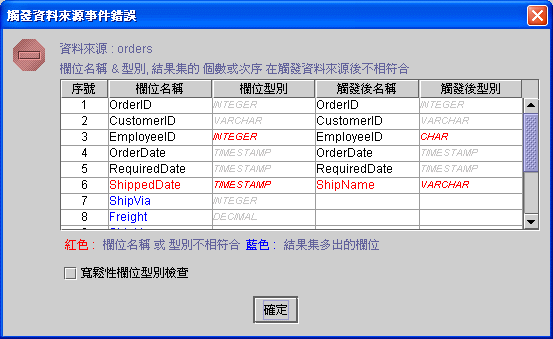

|
事件執行狀態與訊息 (event runtime status and message) 觸發資料來源欄位檢查 (trigger data source type check)
將已開啟 (opened) 或尚未開啟 (not opened) 的資料來源，依另訂的條件 (SQL command) 重新查詢 (query)，資料庫伺服器 (database server) 並重送結果集 (result set) 到客戶端 (client) 。觸發資料來源的 SQL 指令，所選取 (select) 的結果集 (result set) 其欄位名稱 (field name) 與次序，必須與原定義 (defined) 的資料來源完全相同，否則相關的連結資料元件 (data aware component)，無法正確的取值 (retrieve data)。
觸發資料來源欄位檢查 (trigger data source type check)
在設計模式下，觸發資料來源後其結果集的欄位名稱 (field name) 、型別 (type)、 次序與個數，和原定義 (defined) 的資料來源不符合時，系統會出現觸發來源事件錯誤視窗，列示前後查詢的結果集欄位訊息。紅色標示為不符合的欄位名稱、型別，藍色為前後查詢多出的欄位。 預設型別檢核為嚴謹性的檢查，例如：VARCHAR 不等於 CHAR ；DECIMAL 不等於 FLOAT。核選 (check) 寬鬆性欄位型別檢查 (lenient field type check)，系統將欄位型別分類為 字串 (string) 、數值(number) 、日期時間 (datetime)、日期(date)、時間(time)，屬於該類別的型別視為相等，不出現錯誤訓息。例如：VARCHAR 與 CHAR 同屬於字串 (string) ；所有數值型別皆屬於數值類別。 觸發資料來源欄位檢查，只作用於設計模式下，實際執行期 (runtime) 並不會出現。設計師在設計時需考量資料來源欄位型別不符合，是否會影響資料處理的正確性，並更正 SQL 命令的選取 (select) 指令。如果檢查的結果為欄位名稱 (field name) 、 次序與個數不符合，一定得更正，否則元件資料欄位連結將會發生錯誤。

事件執行狀態與訊息 (event runtime status and message)
EvStatus("事件名稱") ：取得事件執行狀態。
EvStatus("事件名稱.error") ：取得事件執行錯誤代碼。
EvStatus("事件名稱.INFO_STRING") ：取得事件執行 INFO_STRING 的訊息。
Copyright © 2001~ 2004 Probe Technology Inc. . All Rights Reserved. Questions, comments, and suggestions to Service@probe.com.tw |